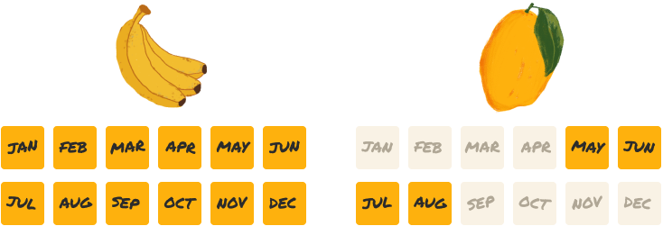

The Great Indian Mango Obsession
Published on 01 July, 2026
India doesn't just eat mangoes. We wait for them. We argue about them. We gift them. We remember summers because of them.
Every summer, India changes. Fruit stalls turn yellow. Families buy mangoes by the crate. People recommend "the best mango seller." Everyone suddenly is a mango expert.Because in India, mangoes aren't just fruit.
They're an obsession.
Those few months everyone loses their mind. Unlike bananas. Mangoes are seasonal. The seasonality creates anticipation.
SEASONAL AVAILABILITY

Meet the Mangoes
Not all mangoes are created equal. Each one has its own flavour, texture, season and a fan following. I made a mango matrix to compare the ones I've had.